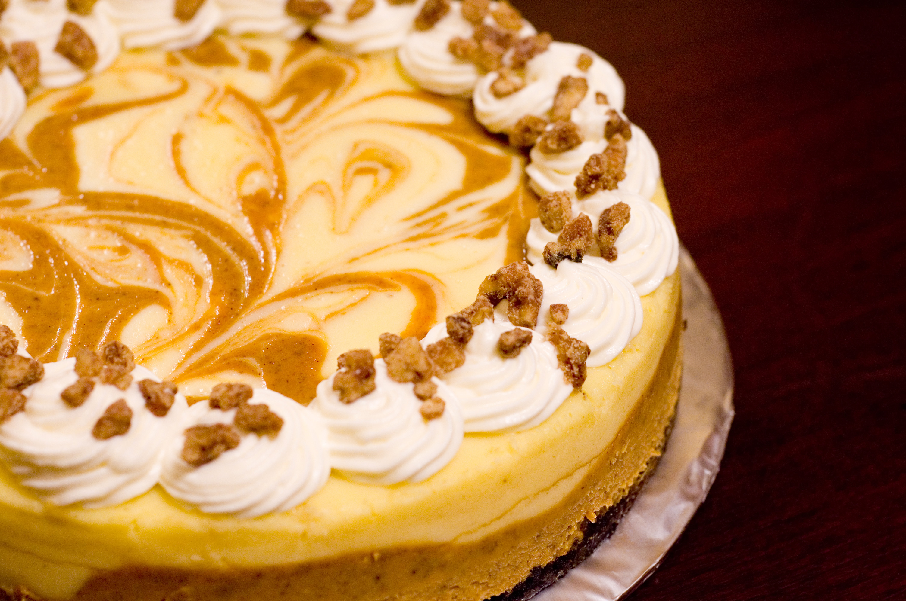

Marbled Pumpkin Cheesecake

Description
A yummy dessert that melts our hearts
Ingredients
- 1 ½ cups crushed gingersnap cookies
- ½ cup finely chopped pecans
- 2 (8 ounce) packages cream cheese, softened
- ¾ cup white sugar, divided
- 1 teaspoon vanilla extract
- ¾ teaspoon ground cinnamon
Directions
- Preheat oven to 350 degrees F (175 degrees C). In a medium bowl, mix together the crushed gingersnap cookies, pecans, and butter.
Press into the bottom, and about 1 inch up the sides of a 9 inch springform pan.
Bake crust 10 minutes in the preheated oven. Set aside to cool.
- In a medium bowl, mix together the cream cheese, 1/2 cup sugar, and vanilla just until
smooth. Mix in eggs one at a time, blending well after each. Set aside 1 cup of the mixture.
Blend 1/4 cup sugar, pumpkin, cinnamon, and nutmeg into the remaining mixture.
- Spread the pumpkin flavored batter into the crust, and drop the plain batter by spoonfuls onto the top. Swirl with a knife to create a marbled effect.
- Bake 55 minutes in the preheated oven, or until filling is set.
Run a knife around the edge of the pan. Allow to cool before removing pan rim.
Chill for at least 4 hours before serving.